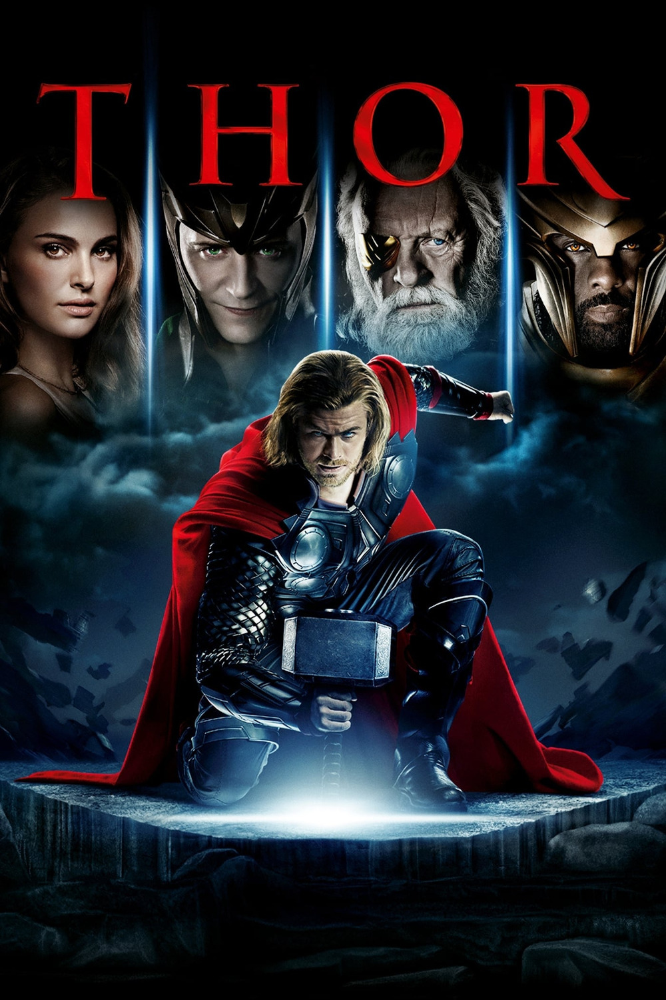

Мировая премьера: 6 мая 2011
Слоган: Мужество бессмертно.
Сюжет: Главный герой фильма – высокомерный и гордый бог грома по имени Тор, чьи безрассудные поступки возрождают древнюю войну в одном из девяти миров – небесном королевстве Асгард. В качестве наказания отец Тора Один отправляет сына в изгнание из небесного королевства на Землю, лишает его могучей силы и обрекает на жизнь среди обычных людей... Тору необходимо многому научиться, чтобы вернуть свои утраченные способности и самому вернуться в Асгард. Ему предстоит не только принять бой и познать истинную цену подвига, но и узнать, что такое предательство и любовь.
Режиссёр: Кеннет Брана
В основе: Комиксы о Торе (США, выходят с 1962, авторы – Стэн Ли, Ларри Либер и Джек Кирби)
Серия: Кинематографическая Вселенная Марвел
В ролях: |
Крис Хемсворт | Тор |
| Натали Портман | Доктор Джейн Фостер | |
| Том Хиддлстон | Локи | |
| Энтони Хопкинс | Один | |
| Стеллан Скарсгард | Доктор Эрик Селвиг | |
| Кэт Деннингс | Дарси Льюис | |
| Кларк Грегг | Агент Фил Коулсон | |
| Рэй Стивенсон | Вольштагг | |
| Джейми Александр | Леди Сиф | |
| Рене Руссо | Фригга | |
| Колм Феоре | Король Лафей | |
| Идрис Эльба | Хаймделл | |
| Джош Даллас | Фандрал | |
| Таданобу Асано | Огун | |
| Максимилиано Эрнандес | Агент Джеспер Ситуэлл | |
| Дакота Гойо | Юный Тор | |
| Джереми Реннер | Клинт Бартон / Соколиный Глаз |
Бюджет: $ 150 млн.
Кассовые сборы в США: $ 181 млн.
Кассовые сборы в мире: $ 449 млн.
Продолжительность: 1 ч. 45 мин.
Рейтинг: 7.0